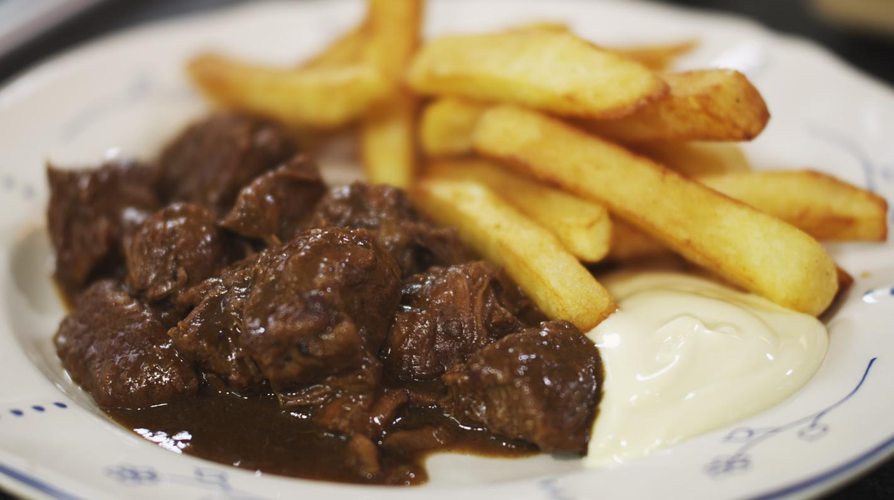

Stoofvlees met friet
Voor 2 personen

Ingrediënten
- 1 grote ui
- Klontjes boter
- Halve kilo rundsvlees rundsvlees (zenuwstuk, in gelijke stukken)
- Peper van de molen
- Snuifjes zout
- Bruin bier bv. Sint Bernardus abt 12, 1 flesje
- 1 laurierblaadje
- 1 takje tijm
- Halve kruidnagel
- 1 eetleper Luikse stroop (appel of peren)
- Halve bruine boterham
- Halve kilo (loskokende) aardappelen
- Koffielepels mayonaise
Bereidingswijze
- Pel de uien en snipper ze in niet al te fijne stukjes.
- Verhit een ruime stoofpot en smelt er een klontje boter in. Stoof daarin de uien op een matig vuur. Laat de
uien niet bruin bakken.
- Verhit een braadpan op een matig vuur en smelt er een klontje boter in.
- Serveer een portie stoofvlees met de vers gebakken frietjes en een flinke lepel verse mayonaise.